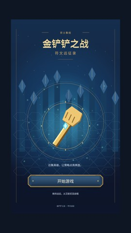
001 01_标题界面StartScene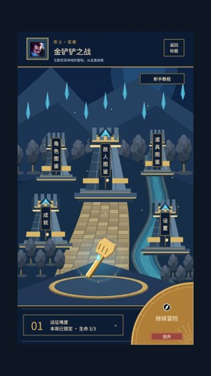
002 02_主城继续冒险MainScene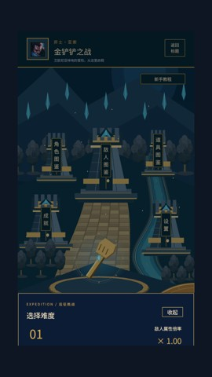
003 03_本局难度锁定MainScene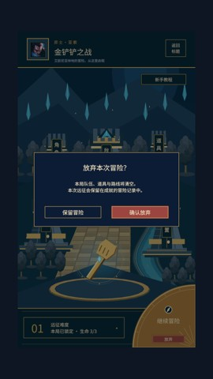
004 04_放弃冒险确认MainScene005 05_主城开始新冒险MainScene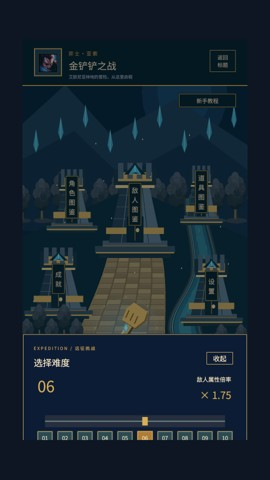
006 06_选择远征难度MainScene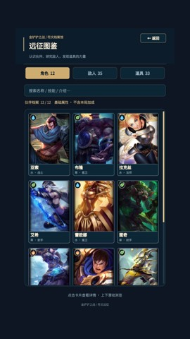
007 07_角色图鉴列表MainScene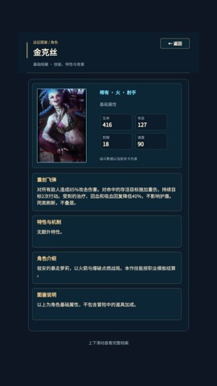
008 08_角色图鉴详情MainScene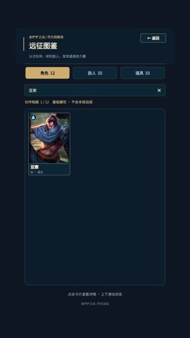
009 09_角色图鉴搜索MainScene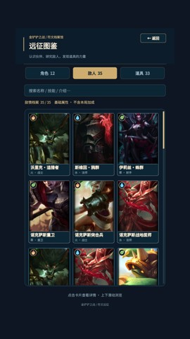
010 10_敌人图鉴列表MainScene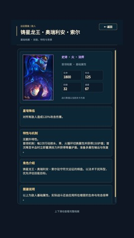
011 11_敌人图鉴详情MainScene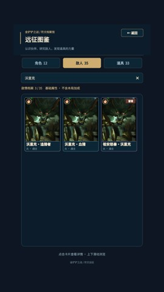
012 12_敌人图鉴搜索MainScene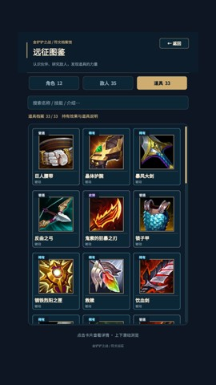
013 13_道具图鉴列表MainScene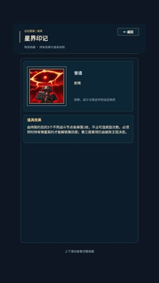
014 14_道具图鉴详情MainScene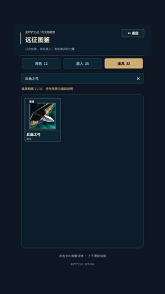
015 15_道具图鉴搜索MainScene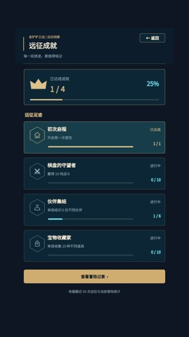
016 01_远征成就MainScene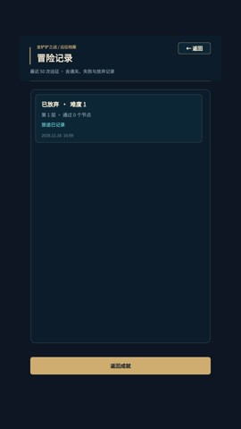
017 02_冒险记录MainScene演示档已产生一条放弃记录
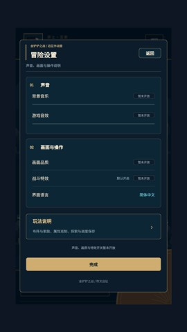
018 03_设置界面MainScene声音画质与特效开关在当前版本标为暂未开放
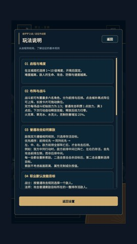
019 04_玩法说明MainScene020 05_进度保存后继续冒险MainScene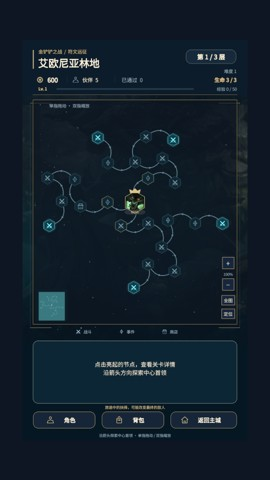
021 06_读取存档恢复资源与地图MapScene确实从独立演示存档读取金币、伙伴、道具与地图
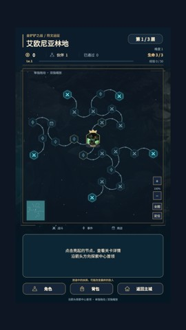
022 01_圆形回廊MapScene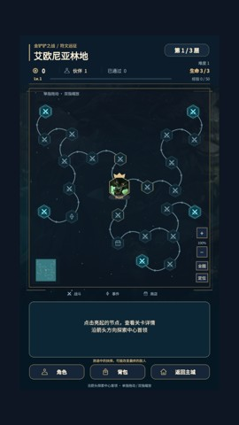
023 02_方形城塞MapScene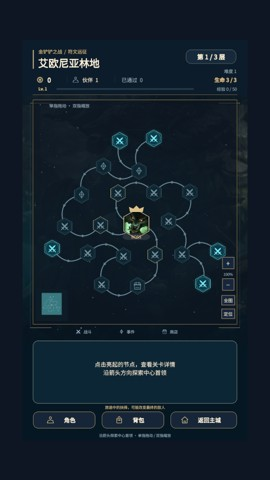
024 03_三角秘阵MapScene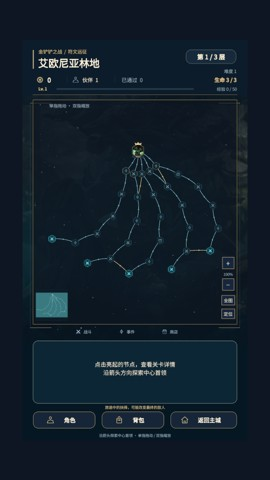
025 04_双湾迷阵MapScene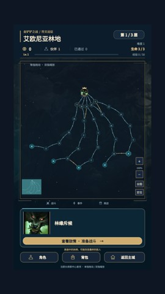
026 05_节点选择与详情MapScene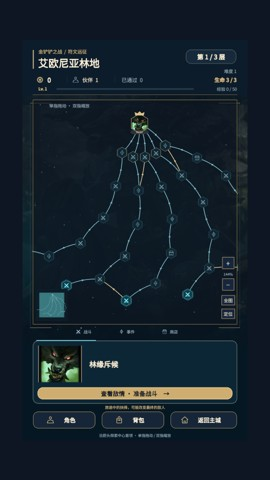
027 06_地图加号放大MapScene028 07_地图拖动MapScene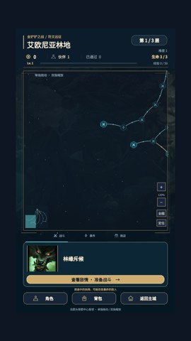
029 08_地图减号缩小MapScene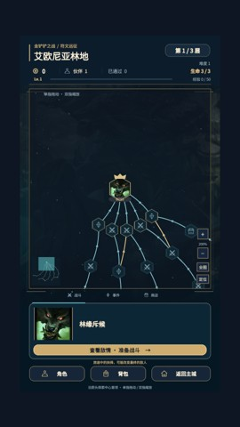
030 09_地图定位MapScene 031 10_恢复全图MapScene
031 10_恢复全图MapScene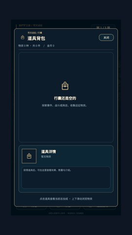
032 11_空道具背包MapScene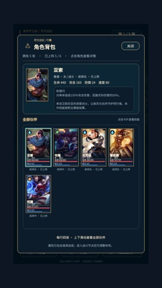
033 12_角色背包与属性MapScene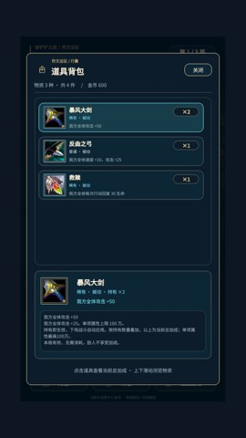
034 13_道具背包与叠加效果MapScene演示档预置伙伴和道具，展示真实背包与全队加成界面
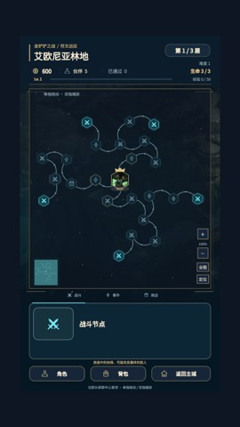
035 14_未解锁节点与探索限制MapScene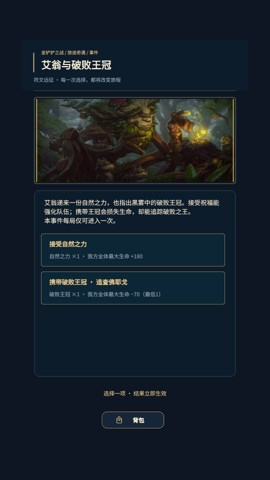
036 01_事件故事与选项MapScene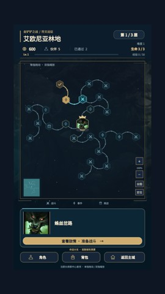
037 02_事件选择后路线推进MapScene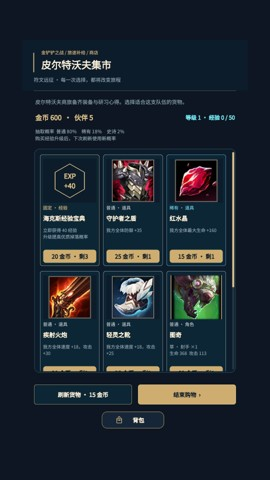
038 03_商店商品与品质概率MapScene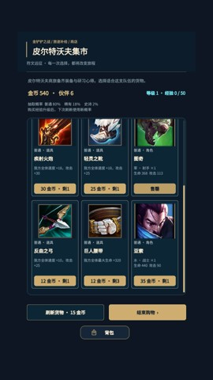
039 04_商店招募伙伴MapScene图奇
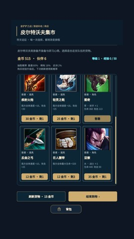
040 05_商店购买道具MapScene守护者之盾
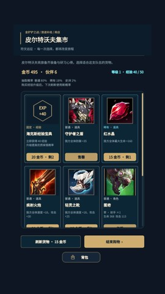
041 06_购买经验与成长MapScene海克斯经验宝典
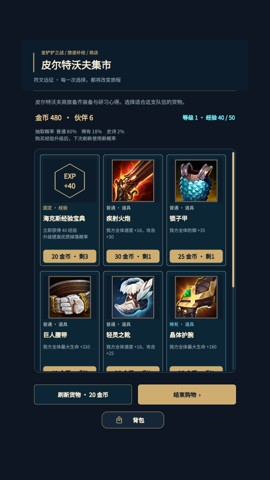
042 07_刷新商品与递增费用MapScene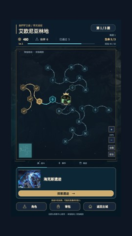
043 08_结束购物返回地图MapScene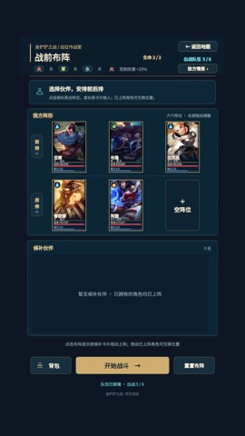
044 01_战前布阵与候补LevelScene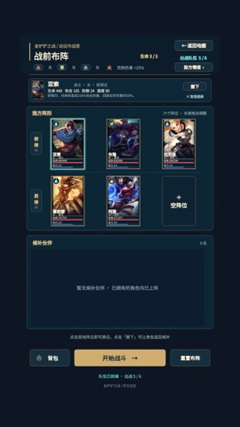
045 02_角色基础属性与技能LevelScene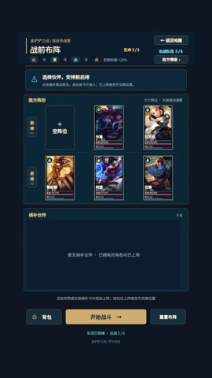
046 03_前后排换位LevelScene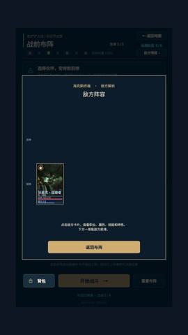
047 04_敌方情报与阵容LevelScene048 05_敌方属性与技能LevelScene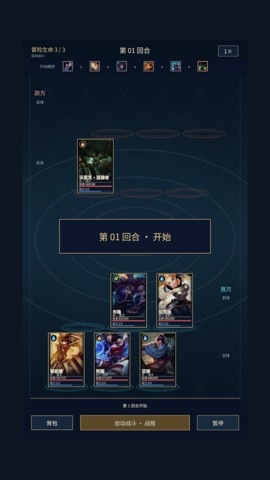
049 06_自动战斗与行动顺序LevelScene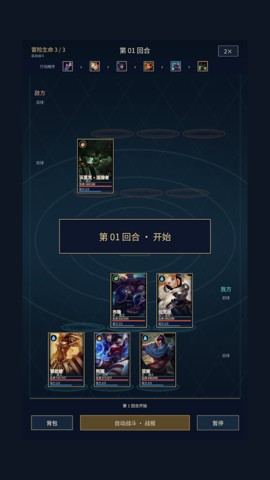
050 07_二倍速战斗LevelScene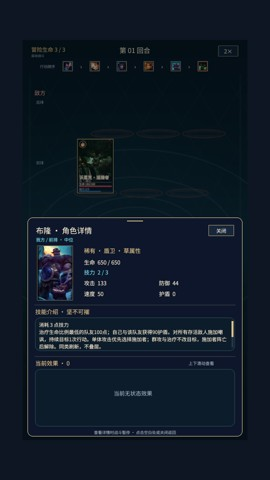
051 08_战中角色详情与状态LevelScene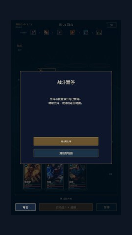
052 09_战斗暂停LevelScene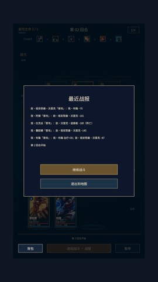
053 10_详细战报LevelScene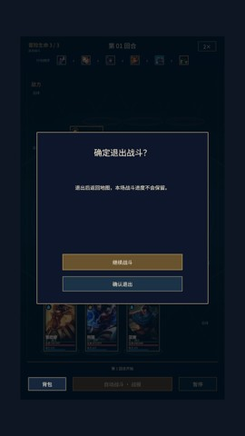
054 11_退出战斗确认LevelScene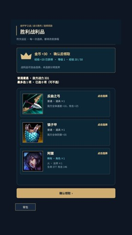
055 12_胜利战利品与经验LevelScene056 13_选择战利品LevelScene057 14_领取奖励并完成节点MapScene058 15_撤下伙伴返回候补LevelScene059 16_重置布阵恢复默认单人阵形LevelScene060 16b_空队禁止开始战斗LevelScene061 17_从候补选择伙伴LevelScene062 18_长按拖动与目标阵位高亮LevelScene063 19_拖动完成伙伴上阵LevelScene064 20_攻击目标与行动提示LevelScene暂缓演示动画以抓取实际战斗画面，战斗计算未改动
065 21_战中背包暂停战斗LevelScene066 22_自动技能释放与技力消耗LevelScene暂缓演示动画以抓取真实技能释放
067 23_确认退出后节点保持未完成MapScene068 01_战败立即扣命LevelScene为稳定演示失败结果，仅演示档提高敌方数值；正式配置未改动
069 02_免费重新布阵LevelScene070 03_三命耗尽与冒险结束LevelScene演示档触发真实失败结算
071 04_失败冒险归档MainScene072 05_楼层Boss情报LevelScene073 06_楼层Boss战斗LevelScene074 01_第三层最终首领MapScene通过演示档预置前置进度和剧情物品；节点界面与解锁判断由游戏实际生成
075 02_结局_符文之地的黎明MapScene演示档预置通关进度以展示结局界面
076 03_王冠分支首领MapScene通过演示档预置前置进度和剧情物品；节点界面与解锁判断由游戏实际生成
077 04_结局_驱散破败黑雾MapScene演示档预置通关进度以展示结局界面
078 05_隐藏第四层与契约首领MapScene通过演示档预置前置进度和剧情物品；节点界面与解锁判断由游戏实际生成
079 06_结局_与铸星龙王的约定MapScene演示档预置通关进度以展示结局界面
080 07_第二层诺克萨斯前线MapScene081 01_home.welcome_欢迎来到符文远征MainScene082 02_home.profile_主城与弈士信息MainScene083 03_home.codex_三座图鉴，随时查阅MainScene084 04_home.tools_常用入口MainScene085 05_home.difficulty_开始前选择难度MainScene086 06_home.start_出发，进入新手地图MainScene087 07_map.route_认识你的练习路线MapScene088 08_map.resources_金币、伙伴与冒险等级MapScene089 09_map.controls_拖动与缩放地图MapScene090 10_map.party_角色、背包与返回主城MapScene091 11_map.select.0_下一站：战斗MapScene092 12_map.enter.0_进入战斗节点MapScene093 13_prep.inspect_先认识你的伙伴LevelScene094 14_prep.stats_四项基础属性LevelScene095 15_prep.element_属性克制与职业LevelScene096 16_prep.skill_技能与被动加成LevelScene097 17_prep.close_返回布阵LevelScene098 18_prep.formation_前排、后排与候补LevelScene099 19_prep.enemy_先看敌方情报LevelScene100 20_prep.enemy.info_知己知彼LevelScene101 21_prep.enemy.close_返回并开始练习LevelScene102 22_prep.start_开始第一场战斗LevelScene103 23_combat.order_角色会自动行动LevelScene104 24_combat.energy_生命、技力与技能LevelScene105 25_combat.speed_战斗倍速LevelScene106 26_combat.pause_暂停与战报LevelScene107 27_reward.intro_胜利后领取战利品LevelScene108 28_reward.select_选择奖励LevelScene109 29_reward.claim_确认领取，继续前进LevelScene110 30_map.select.1_下一站：事件MapScene111 31_map.enter.1_进入事件节点MapScene112 32_event.intro_事件：阅读故事，作出选择MapScene113 33_event.choose_选择你需要的帮助MapScene114 34_map.select.2_下一站：商店MapScene115 35_map.enter.2_进入商店节点MapScene116 36_shop.intro_商店：花费金币强化队伍MapScene117 37_shop.buy_购买一把暴风大剑MapScene118 38_shop.bag.open_打开背包检查道具MapScene119 39_shop.bag.info_背包：道具持有即生效MapScene120 40_shop.bag.close_返回商店MapScene121 41_shop.refresh_刷新与库存MapScene122 42_shop.leave_补给完成，准备挑战BossMapScene123 43_map.select.3_下一站：BossMapScene124 44_map.enter.3_进入Boss节点MapScene125 45_boss.intro_Boss：综合运用所学LevelScene126 46_boss.formation_把新伙伴加入阵容LevelScene127 47_boss.start_挑战林地守关者LevelScene128 48_boss.inspect_选择阵位，让伙伴上阵LevelScene129 49_complete_新手试炼完成MapScene130 90_主城重播教程MainScene131 99_教程完成返回主城MainScene